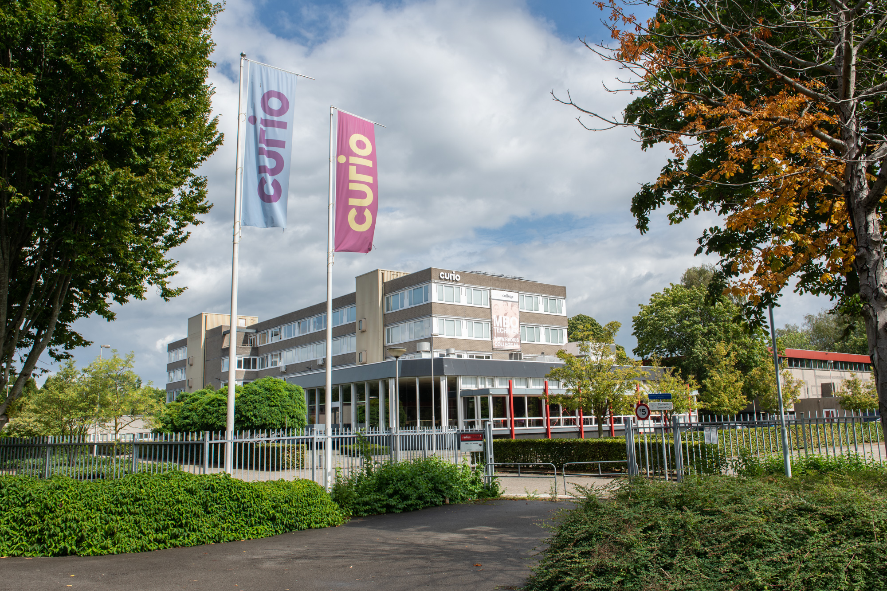

Introductie

introductie:
Welkom bij Curio Breda, de school waar je de spannende wereld van softwareontwikkeling kunt ontdekken! Bij ons draait alles om het leren maken van computerprogramma's en apps. Onze vriendelijke leraren staan klaar om je alle ins en outs van softwareontwikkeling bij te brengen.
Of je nu al wat ervaring hebt in programmeren of helemaal nieuw bent in dit vakgebied, bij Curio Breda is er plaats voor jou. We nemen je mee op een reis waarin je leert hoe je codes schrijft, problemen oplost en creatieve oplossingen bedenkt. Het is een vaardigheid die je in allerlei beroepen kunt gebruiken, want softwareontwikkelaars zijn overal nodig
Ben je klaar om de uitdagende maar opwindende wereld van softwareontwikkeling te verkennen? Sluit je aan bij Curio Breda en bereid je voor op een avontuurlijke reis in de wereld van technologie en innovatie!